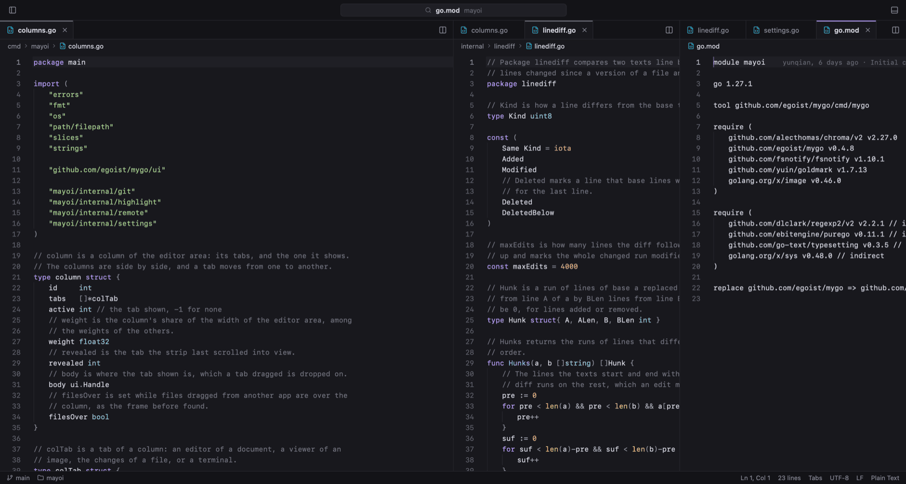

Native pixels, no web stack
Go drives the UI. MyGo draws it on the GPU. There is no DOM to hydrate and no browser engine to carry around.
Go→MyGo→GPU→pixels
迷い · Native code editor
Mayoi is a small, fast code editor written in Go. It draws a native UI on the GPU with MyGo. No webview, no Electron. The packaged app is about 18 MB.
mayoi main > git status On branch main Changes not staged for commit: modified: wrap.go mayoi main > mayoi . Opening hello-mayoi in Mayoi… mayoi main >
Press ⌘P or Ctrl P inside the preview. Type wrap, hit Enter, then edit either column. The other follows.
Why so small
Most editors ship a web runtime. Mayoi renders its interface on the GPU through MyGo, so the app stays close to the metal and out of your way.
Read the architecture notesGo drives the UI. MyGo draws it on the GPU. There is no DOM to hydrate and no browser engine to carry around.
Tabs, split columns, fuzzy open, project search, Git, and a Ghostty-based terminal. Remote SSH on macOS and Linux.
Normal, insert, and visual modes. Motions, operators, text objects, counts, registers, macros, and . to repeat.
di"change inside quotesAutosave, per-tab undo, and windows that reopen with their columns, tabs, and carets. Settings sync through GitHub or Google.
Markdown, SVG, and Mermaid render next to the code. Mermaid blocks become diagrams. LaTeX becomes formulas.
Tour
These are screenshots from Mayoi itself, not mockups.

Install
Signed and notarized on macOS. A shell command on Linux. Installers for Windows. Or build it from source.
Get the latest releaseMayoi checks for updates automatically.
brew tap --custom-remote sorrycc/mayoi https://github.com/sorrycc/Mayoi.git
brew trust sorrycc/mayoi
brew install --cask mayoiRecent Homebrew needs brew trust once. Older Homebrew can skip that line.